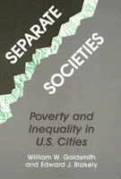

An examination of the presence and persistence of urban poverty and the dilemmas of local reform
An examination of the presence and persistence of urban poverty and the dilemmas of local reform


 An examination of the presence and persistence of urban poverty and the dilemmas of local reform
An examination of the presence and persistence of urban poverty and the dilemmas of local reform

|  |
Separate SocietiesPoverty and Inequality in U.S. CitiesWilliam W. Goldsmith and Edward J. Blakely, foreword by Harvey Ganttpaper EAN: 978-0-87722-933-9 (ISBN: 0-87722-933-3) |
Paul Davidoff Award, Association of Collegiate Schools of Planning, 1993
"A passionately argued, provocative book that takes us back to the long neglected emphasis on the cities that was so distinctive a part of the original War On Poverty. But now, at issue is the city of the 21st century."
—Eugene Smolensky
"Economic and political forces no longer combat poverty—they generate poverty!" exclaim William Goldsmith and Edward Blakely in their report on the plight of American's urban poor. Focusing on the reality of separation—social segmentation, economic inequality, and geographic isolation—the authors examine the presence and persistence of urban poverty, the transformation of national industry into a global economy, and the dilemmas of local reform. Goldsmith and Blakely document the appalling conditions of poor and minority people in central cities, examining those conditions in relation to inequalities in the national distributions of income and wealth. They analyze the connections between the structure and movement of the new global economy and the problems of the poorest Americans. They demonstrate how globalized markets and production arrangements have worsened the opportunities facing most American cities and workers. Noting that neither economic growth nor public subsidy has solved the problems of the poor, Goldsmith and Blakely propose that the very separation that exacerbates poverty be used to motive restructure.
The authors maintain that when those in power locally respond to the pressure exerted by those suffering from inequality and isolation, community-level institutions will be restructured. These multi-local coalitions of small businesses and neighborhood organizations need to press for reallocation of federal resources in favor of domestic needs and redirection of the national economic favor of workers and common citizens.
"This is a major work that will influence debate on the issue of American urban poverty into the next century. The authors argue that the recent upsurge in urban poverty has been generated by a particular set of American political responses to changes in the international and national economies, exacerbated by a long process of federally subsidized suburbanization and by racial discrimination. The difference [from Wilson's the Truly Disadvantaged] is that Goldsmith and Blakely's policy recommendations are more comprehensive and have a greater focus on strategies 'from the bottom up.'"
—Joe T. Darden, Dean of Urban Affairs Programs, Michigan State University
"Goldsmith and Blakely present a vivid, factually accurate account of the post-1970s rise in inequality, underemployment, poverty, and collapsing societal infrastructures. Having outlined the dimensions of national disaster, they do not give up hope. Rather, they advocate the improved industrial policy, expanded opportunity for education, and increased family support.... Their provocative optimism, although guarded, is a refreshing challenge, much needed in this period of pessimism and cynicism."
—Robin M. Williams, Jr., Henry Scarborough Professor of Social Science, Emeritus, Cornell University
List of Figures and Tables
Foreword – Harvey Gantt
Acknowledgments
1. Separate Status: Top-Down Economics and Bottom-Up Politics
Theories of Poverty •
Local Institutions
2. Separate Assets: Race, Gender, and Other Dimensions of Poverty
The Distribution of Income and Wealth •
Indexes of Poverty •
Low Wages and Underemployment •
The Geographic Concentration of Poverty •
The Persistence of Today's Poverty
3. Separate Opportunities: The International Dimensions of American Poverty
Restructuring for Whom? •
Beating Labor to Pay for Bad Management: New Patterns of Work •
Industrial Relocation in the International Economy •
Trade Flows, Market Saturation, and Corporate Profits •
Internationalization of Finance and Regulation: Instability, Speculation, and Debt •
A Comment on Public Policy
4. Separate Places: The Changing Shape of the American Metropolis
Changing Regional Economies and City Systems •
The Suburbanization of Manufacturing and Service Jobs •
The Changing Location of Residences •
Poverty and Place
5. Rebuilding the American City
Federal Aid, Municipal Expectations, and Antipoverty Programs •
The Debate on National Policy •
Source of Political Support •
Rebuilding the American City
Notes
Bibliography
Index
William W. Goldsmith is Professor of City and Regional Planning and Director of the Program on International Studies in Planning at Cornell University.
Edward J. Blakely is Professor of City and Regional Planning at the University of California, Berkeley.
Conflicts in Urban and Regional Development, edited by John R. Logan and Todd Swanstrom.
Conflicts in Urban and Regional Development, edited by John R. Logan and Todd Swanstrom, includes books on urban policy and issues of city and regional planning, accounts of the political economy of individual cities, and books that compare policies across cities and countries.
© 2015 Temple University. All Rights Reserved. This page: http://www.temple.edu/tempress/titles/909_reg.html.